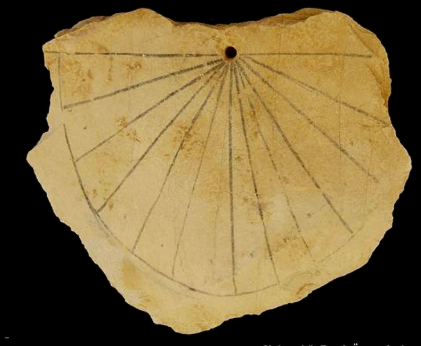
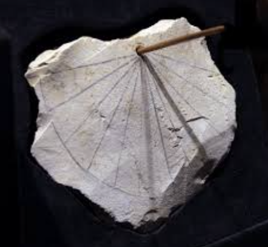
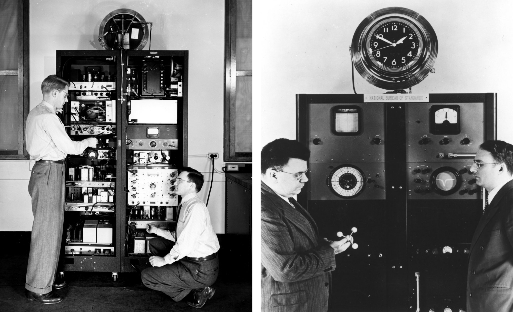
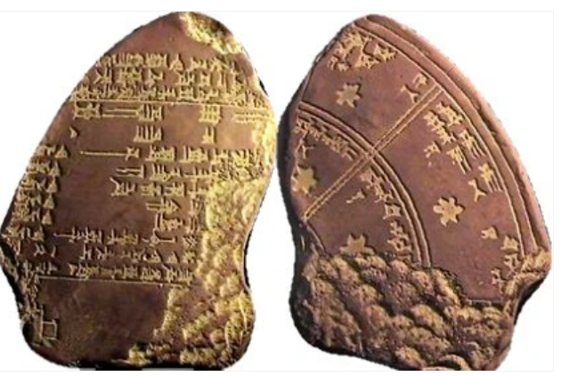
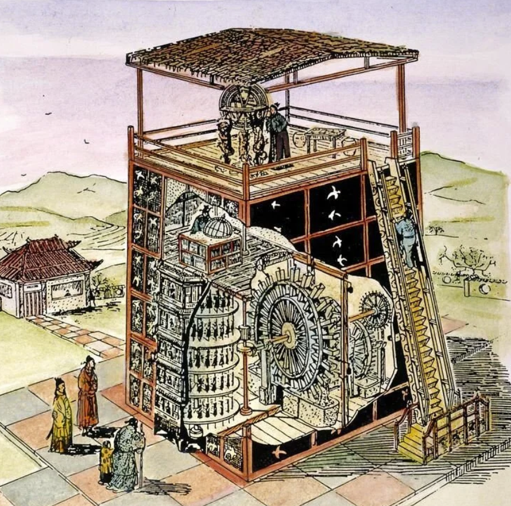
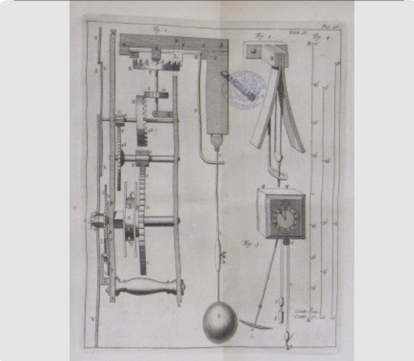
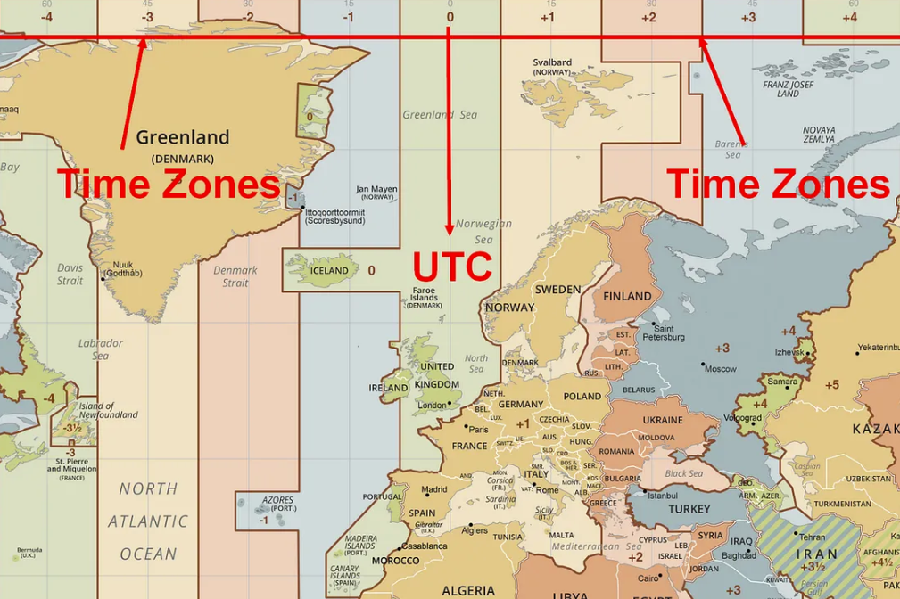
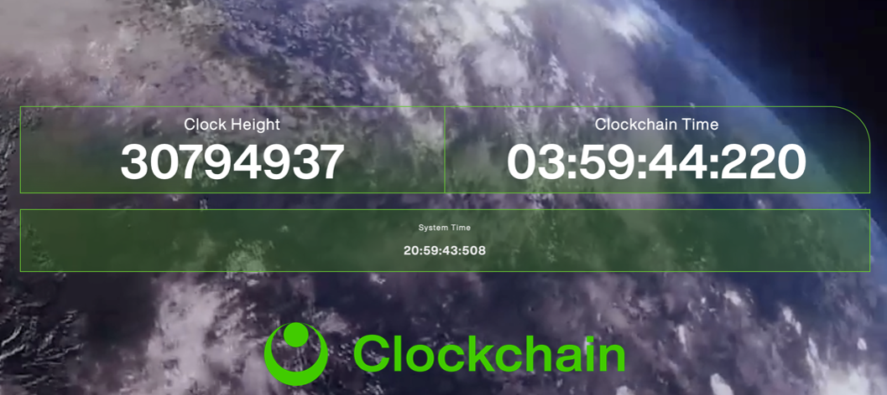

3500 BCE
The earliest sundials appear in ancient Egypt. These established the idea of dividing daylight into regular intervals.


From 13.8 billion years before present to Q4 2026.

A singularity exploded or imploded or expanded — we don’t really know, in an event known as the Big Bang. This was the origin of spacetime, from which both space and time descend.
The earliest sundials appear in ancient Egypt. These established the idea of dividing daylight into regular intervals.


The ancient Babylonians introduced the base 60 numbering system still in use today. This is why 1 minute has 60 seconds, 1 hour has 60 minutes, and a circle has 360 degrees.

Julius Caesar standardized the solar year across the Roman world. The Julian calendar became the dominant calendar for the next 1600 years.
Tang Dynasty Buddhist monk and engineer Yi Xing pioneered the first regulated mechanical timing systems. His work led to the world’s first mechanical clock built by Su Song in 1092. Water powered and chain driven, Su Song’s clock tower was one of the most advanced premodern clocks ever constructed.

The first clock towers appeared and proliferated in Europe, ushering in the age of public synchronized urban time. This had profound implications for labor, commerce, and eventually industrial civilization.
Christiaan Huygens developed the first pendulum-based clock, which dramatically improved accuracy from 15 minutes/day error to about 15 seconds/day.

The International Meridian Conference established Greenwich as the prime meridian, standardized international timekeeping, and formed the basis for global time zones.
The first quartz clock was introduced, offering a far more stable time reference than mechanical clocks.
The first atomic clock was built at the US National Bureau of Standards. This changed timekeeping from astronomy-based to physics-based.
The second becomes officially defined by Cesium 133 transitions. Specifically, 9,192,631,770 oscillations of cesium radiation. Modern civilization depends on this definition.
Coordinated Universal Time (UTC) adopted. UTC combines atomic precision with Earth rotational corrections via leap seconds. This is the core global time standard in use today.

Network Time Protocol (NTP) introduced. NTP becomes foundational internet infrastructure. Nearly every computer network on Earth uses it.
Bitcoin blockchain launches. Blockchains introduce decentralized timestamp ordering, which encompass consensus-based chronology, immutable sequencing, and cryptographic proof of temporal ordering.
Clockchain introduces its blockchain-native global time standard. This standard introduces decentralized trustless time, combining blockchain security with atomic clock accuracy.
Read about the solution